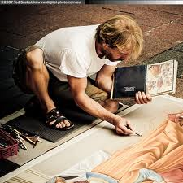

Some Famous Paintings

| Photography | Painting | Writing |
|  | ||
Photography |
|---|
| A photographer is a person who undertakes photography as a profession. A professional photographer may be an employee, for example of a newspaper, or may contract to cover a particular event such as a wedding or graduation, or to illustrate an advertisement. Others, including paparazzi and fine art photographers, are freelancers, first making a picture and then offering it for sale or display. |
Some Famous Photographers |
|
|---|---|
| 1. Ansel Adams is probably the most easily recognized name of any photographer. His landscapes are stunning, and he achieves an unparalleled level of contrast using creative darkroom work. You can improve your own photos by reading Adams' own thoughts as he grew older, when he wished that he had kept himself strong enough physically to continue his work. |
|
| 2. Yousuf Karsh has taken photographs that tell a story, and that are more easily understood than many others. Each of his portraits tells you all about the subject. He felt as though there was a secret hidden behind each woman and man. Whether he captures a gleaming eye or a gesture done totally unconsciously, these are times when humans temporarily lose their masks. Karsh's portraits communicate with people. | |
| 3. Robert Capa has taken many famous war-time photographs. He has covered five wars, even though the name "Robert Capa" was only the name placed to the photos that Endre Friedman took and that were marketed under the "Robert Capa" name. Friedman felt that if you were not close enough to the subject, then you wouldn't get a good photograph. He was often in the trenches with soldiers when he took photographs, while most other war photographers took photographs from a safe distance. | |
Painting |
|---|
| Painting is a mode of creative expression, and the forms are numerous. Drawing, composition or abstraction and other aesthetics may serve to manifest the expressive and conceptual intention of the practitioner. Paintings can be naturalistic and representational (as in a still life or landscape painting), photographic, abstract, be loaded with narrative content, symbolism, emotion or be political in nature. |
Some Famous Paintings |
|
|---|---|
|
|
The most famous painting of all time, the Mona Lisa was painted by Leonardo da Vinci during the Renaissance in Florence. He began painting the Mona Lisa in 1503 or 1504 and finished it shortly before he died in 1519. The painting is named for Lisa del Giocondo, a member of a wealthy family of Florence. In 1911, the Mona Lisa was stolen by Louvre employee Vincenzo Peruggia, an Italian patriot who believed the Mona Lisa should be returned to Italy. After having kept the painting in his apartment for two years, Peruggia was finally caught when he attempted to sell it to the directors of the Uffizi Gallery in Florence. Today, the Mona Lisa hangs again in the Louvre in Paris where 6 million people see the painting each year. |
| The Starry Night was painted by Dutch artist Vincent van Gogh. Although Van Gogh sold only one painting in his life, the aftermath of his work is enormous. Starry Night is one of his most famous paintings and has become one of the most well known images in modern culture. The painting shows the village of Saint-Remy under a swirling sky, in a view from the asylum towards north. The cypress tree to the left was added into the composition. Since 1941 it has been in the permanent collection of the Museum of Modern Art in New York. |
|
Writing |
|---|
| A writer is a person who uses written words in various styles and techniques to communicate ideas. Writers produce various forms of literary art and creative writing such as novels, short stories, poetry, plays, news articles, screenplays, or essays. Skilled writers are able to use language to express ideas and their work contributes significantly to the cultural content of a society. |
Some Famous Writers |
|
|---|---|
|
|
William Shakespeare 26 April 1564 (baptised) - 23 April 1616) was an English poet and playwright, widely regarded as the greatest writer in the English language and the world's pre-eminent dramatist. He is often called England's national poet and the "Bard of Avon". His extant works, including some collaborations, consist of about 38 plays, 154 sonnets, two long narrative poems, and a few other verses, the authorship of some of which is uncertain. His plays have been translated into every major living language and are performed more often than those of any other playwright. |
| Dame Agatha Mary Clarissa Christie, DBE (15 September 1890 - 12 January 1976) was an English crime writer of novels, short stories, and plays. She also wrote six romances under the name Mary Westmacott, but she is best remembered for the 66 detective novels and 14 short story collections she wrote under her own name, most of which revolve around the investigations of such characters as Hercule Poirot, Miss Jane Marple and Tommy and Tuppence. She also wrote the world's longest-running play, The Mousetrap. |

|
| Copyright © UC|2014 |